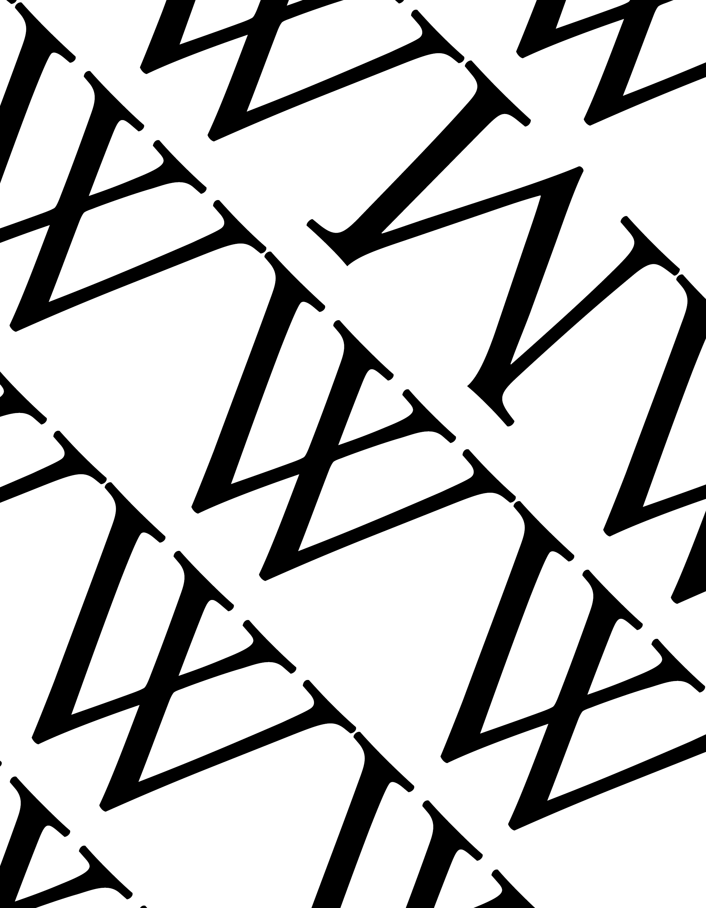
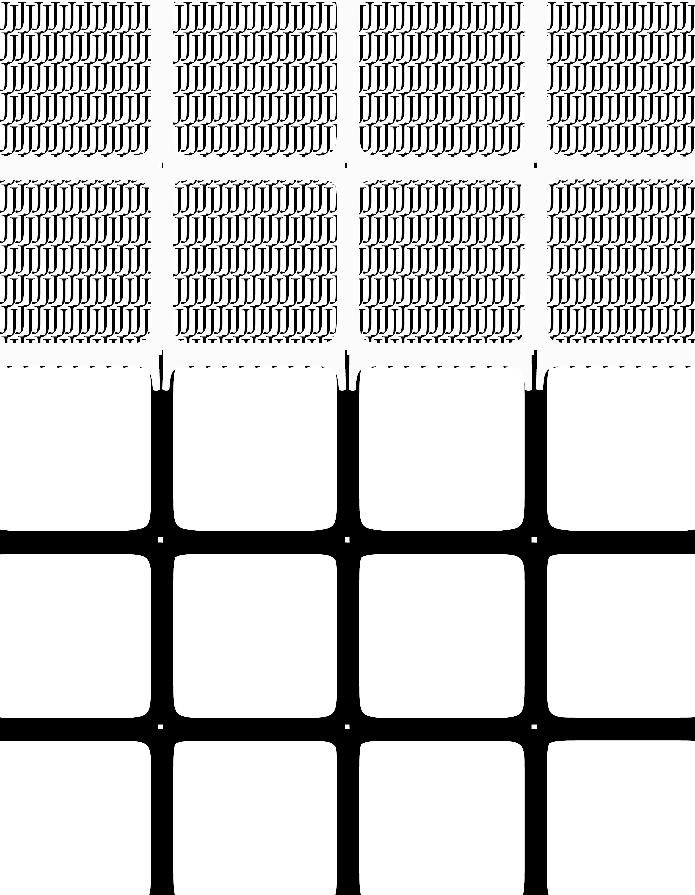
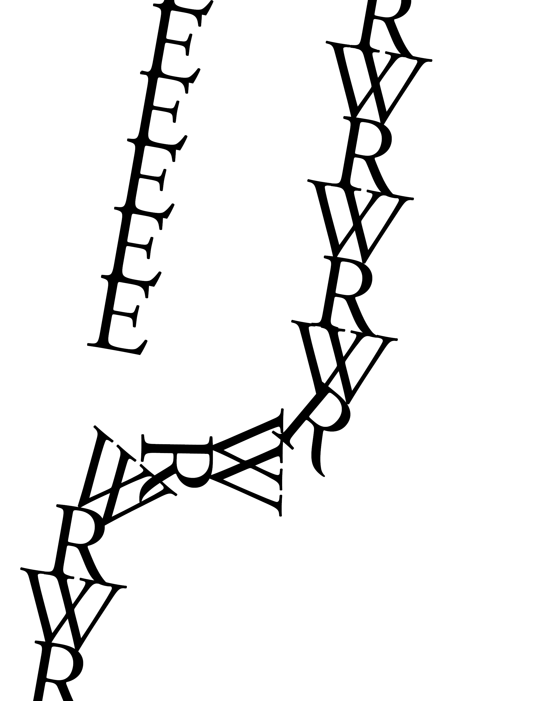
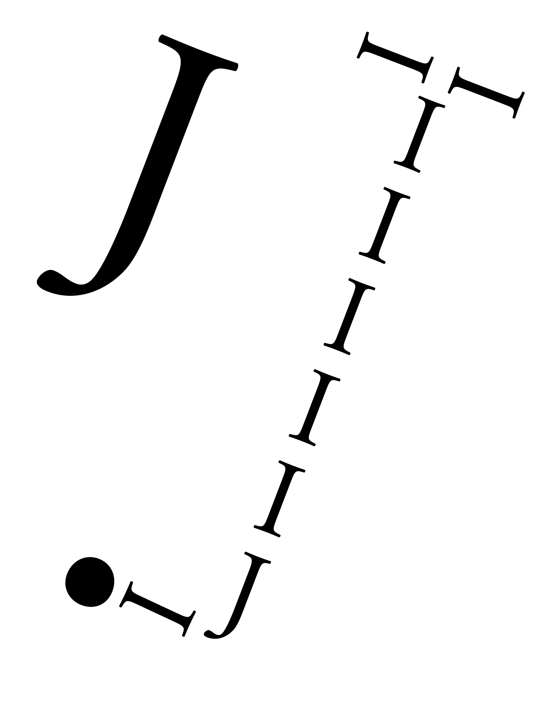
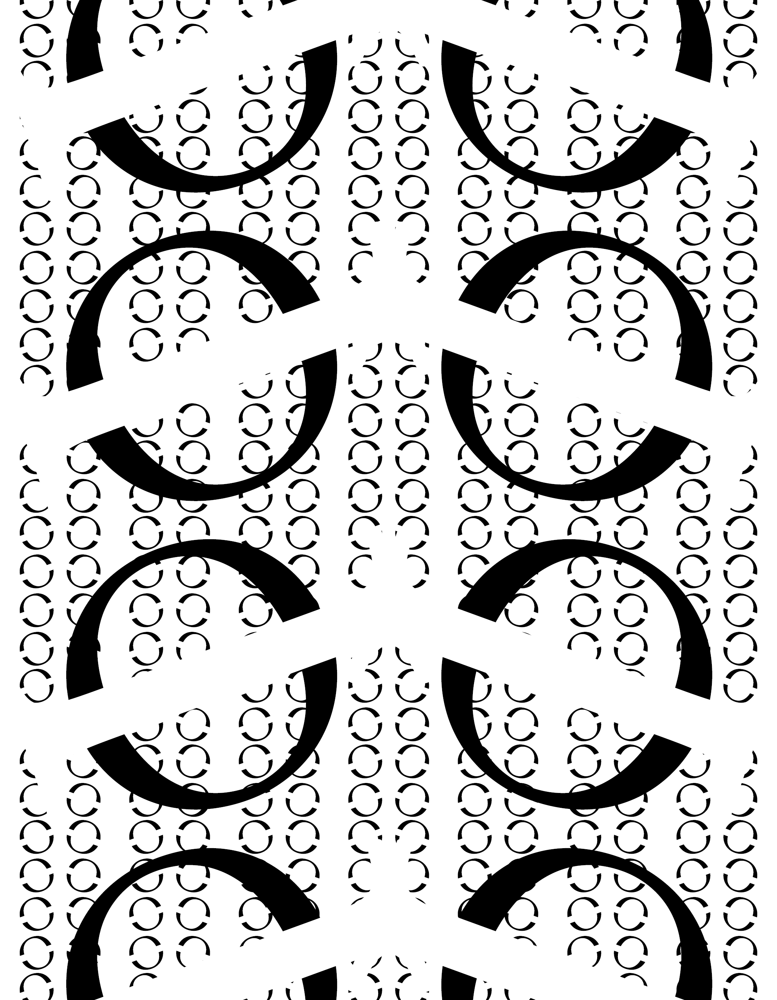

Gestalt Principles
Similarity
For this first design, i put a bunch of Uppercase Ws but there's also a sneaky Upside-down M hiding in plain view. I'm pretty sure you didn't notice it at first but now you do
Figure-Ground
For this second design I wanted to do something that was sort of an illusion using Capital Is and Js, with some of them being white, so it's basically positive and negative space.
Continuity/Closure
For the Third design, I'm not sure whether I did Continuity or Closure or did both. but basically in this design, you can roughly connect the E with the RWs.
Similarity and Closure
The Fourth design I definitely know I did Closure and Similarity, where I created the letter "J" with "I"s, a J, and a period (.), Then I put an actual J and moved it next to the custom "J".
Closure
For the last design I did was Closure where an Uppercase "O" was cut through with a White "Uppercase I". In the end, I mostly followed 3 of the 7 Gestalt principles